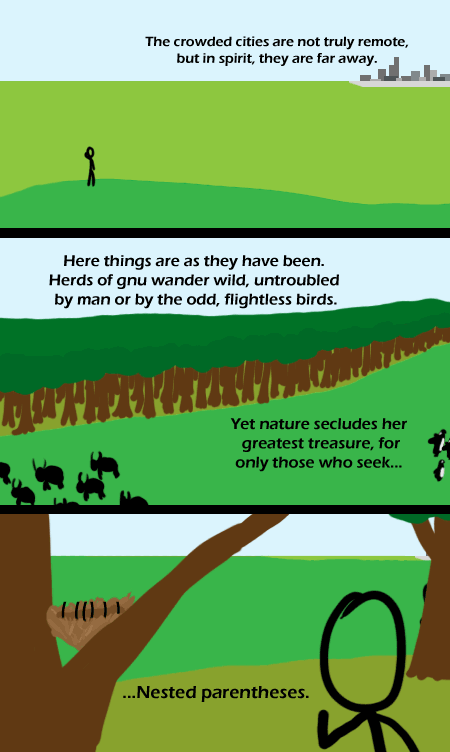

Comic JK 344
When I Feel Like It
⇤
<
?
>
⇥

⇤
<
?
>
⇥
Forum
.
RSS
.
Digg
.
Facebook
.
Reddit
.
Twitter
.
Stumbleupon
Enter your thoughts on number 344 here. Please, no (spamming, trolling(crack, troll, marijuana troll,), phreaking). You guys should start adding timestamps to your comments. Your mother unnecessarily nests parentheses with thousands of levels. Lots more colour recently. >The tablet perhaps? >> Yeah. The iPad is next Muhahah >> But seriously, don't u guys get it ? Its GNU and Linux >> Gnu for GNU's Not Unix and the Penguins for Tux the Linux Penguin >>GNU/Linux and nested parenthesis hooray! The GNU Kernel is called hurd. GNU/Linux seems to mean GNU with the Linux kernel instead of hurd, but much of the software in modern Linux distro's does not originate from GNU. >> And the cities represent Windows' and Macs, riiight? Eh, I don't like cities anyway. :P I always preferred the majestic wild lambdas. >Well i've always loved the devlish Fourier transforms...but to each, his own. Weka? >They must be ostriches. That would explain their tuxedo-like plumage. >>Penguin ostriches! They can fly! Does no one see the thing hiding behind the tree in the last panel! >I think that's a gnu's behind >>It could be Stallman >>> Or the scientist from yesterday. >>>>Its obviously Linus Torvalds >>>>>It's BHG! oh REALLY!? <3 Grammar > </3 grammar >> Nested Parentheses can be quite vicious when provoked by Readibility Nuts; however, they will not harm a Lisp/Scheme programmer. >>> Dammit, now I have only -5 hp. D: i wonder if anyone realized that a gnu is actually an animal...this writer is amazing - byi >I realised. >> Only extremely stupid people don't already know that.